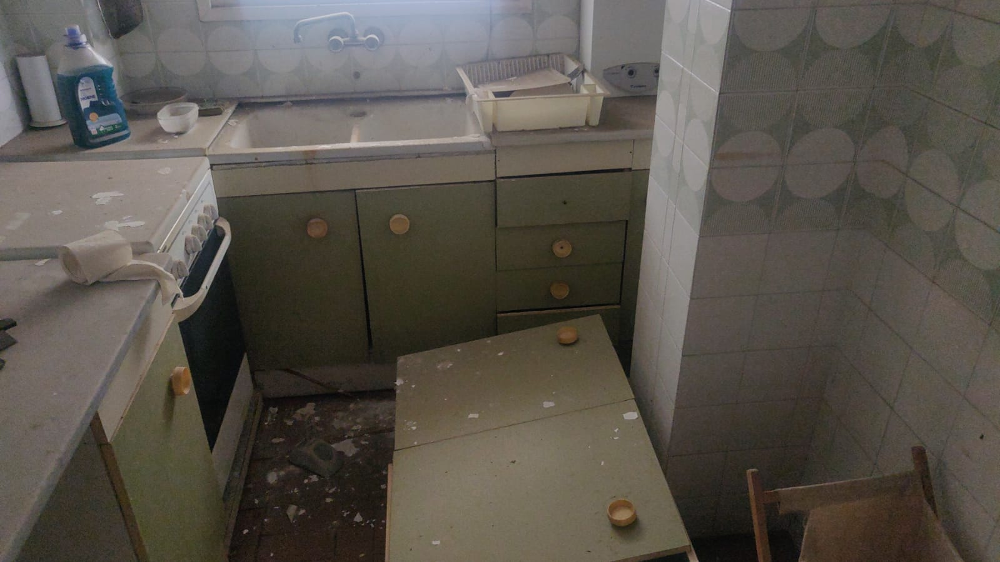

Vaciado de pisos y locales

Nuestro servicio de vaciado de pisos en Barcelona
¿En qué consiste este servicio?
Proporcionamos un servicio de vaciado de pisos y residencias en Barcelona dirigido a todo género de inmuebles, a través de el que nuestros profesionales se hacen cargo de desmontar y retirar todos y cada uno de los elementos de tu residencia que ya no precises guardar.
Transportamos aquello que ya no quieres amontonar a una planta concreta de reciclaje, con atentas medidas de cautela y contribuyendo a cuidar nuestro ambiente.
Qué ofrecemos?
Ofrecemos el mejor servicio de vaciado de pisos en Barcelona, a través del que nuestro equipo asistirá a tu dirección para retirar todos y cada uno de los objetos que ya no te sean útil, y los trasladarán a un punto de reciclado, donde van a ser adecuadamente tratados en dependencia de sus materiales de composición.
Somos siendo conscientes de la necesidad de cuidar el medioambiente, y ponemos en práctica todas y cada una de las medidas precisas para efectuar el procedimiento de manera que edifiquemos un entorno más limpio y sustentable, reciclando los artículos que ya no precisas.
Rapidez y efectividad
Destacamos por ofrecer un servicio donde prevalece la velocidad y eficiencia, consiguiendo clientes del servicio plenamente satisfechos.
Profesionalidad
Nuestro equipo trabaja con esmero e implicación, y con máxima profesionalidad para desarrollar soluciones eficaces y resolutivas para nuestros clientes del servicio.
Personal cualificado
Contamos con personal cualificado que ha sido preparado en especial para el vaciado de pisos de Barcelona, y que recibe formación continuada para ofrecer a nuestros clientes del servicio un servicio que pone en práctica las técnicas de desmontaje, embalaje y retirada de bártulos más eficientes del ámbito.
Experiencia
Gracias a nuestra experiencia, SG Servicios es hoy en día una compañía certificada y experimentada que ofrece soluciones inusuales para el vaciado de pisos. Garantizamos el éxito de nuestro servicio, el que brindamos con total seriedad y dedicación.
Fiabilidad y seguridad
La confiabilidad y la seguridad son cualidades que definen nuestro servicio, y es que, nuestros clientes del servicio pueden confiar por completo en nuestras soluciones y en el trato próximo que le ofrece nuestro equipo.
Nuestro servicio de vaciado de locales en Barcelona
¿Muebles viejos para tirar? Recogemos moblaje de todo género de negocios, útiles, trastos viejos, restos de mercadería , te ofrecemos una solución rápida; costo en exactamente la misma llamada, servicio en menos de veinticuatro a cuarenta y ocho horas, retiramos todo en una jornada, reciclamos conforme normativa, damos certificado de destrucción.
Nuestra empresa da servicio a tiempo, personal cualificado, camiones amoldados, contamos con todos y cada uno de los seguros, velocidad y adaptación al horario de nuestros clientes del servicio, noventa y nueve con ocho por ciento de satisfacción conforme creencias de nuestros clientes del servicio en google.
Cualquier vaciado urgente en menos de 24
Hoteles Y Hostales
Restaurantes Y Bares
Tiendas De Todo Tipo
Grandes Almacenes
Naves, Locales, Almacenes
Inmobiliarias
Oficinas De Empresas
Pisos Turísticos
Naves Y Locales Comerciales
Escuelas, Institutos Y Universidades
Residencias, Clínicas Y Hospitales
Agentes De Recursos Raíces
Corredores De Seguros
...¡Todo Tipo De Empresas, Llama Ahora!